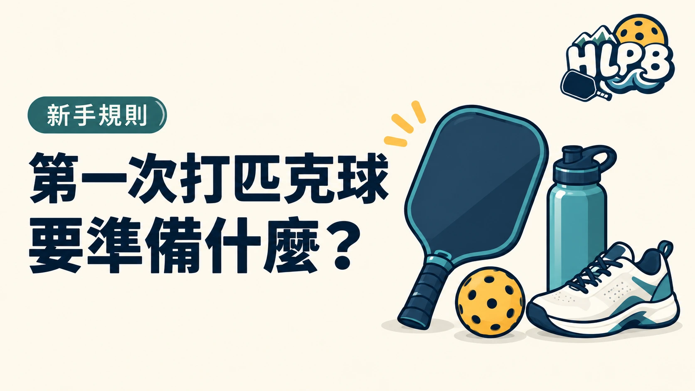

第一次打球，先確認場次，再準備用品。有場地照片、有球網，不代表當天可以直接加入。
出發前先確認
| 項目 | 要問清楚 |
|---|---|
| 參加資格 | 是否接受新手，需不需要先報名 |
| 時間與地點 | 正確場地、集合位置與進場方式 |
| 器材 | 有沒有球拍可借，球與球網由誰準備 |
| 費用 | 活動費包含哪些項目，如何繳費 |
| 異動 | 下雨、取消或臨時不能到時怎麼通知 |
報名球局和自行租借場地，是兩種不同安排。 已由主辦者設網的球局，依公告準備個人物品即可。自行借場的人，才需要另外核對球網、照明與其他設備。
放進球袋的用品
- 場館允許、方便移動的運動鞋。
- 飲用水、毛巾與方便活動的衣物。
- 自己的球拍，或事先確認好的借拍安排。
- 戶外活動依天候準備防曬等個人物品。
沒有球拍，可以先問能否借用。先接觸不同器材，再決定選購，不必在第一次上場前買齊所有配件。
開打前先學哪幾件事？
先看懂發球打到哪裡、雙方各落地一次、非截擊區和基本計分。有疑問就先問帶領者，不需要裝成已經會打。
在花蓮找場次，可到揪打球查看入口。學校場地依學校或租借團體的進場安排使用，球局沒有確認前先別直接進校。
來源：USA Pickleball 入門介紹 官方資料 ↗ 官方資料 ↗；場次與用品清單為 HLPB 編輯整理。資料核對：2026/10/13。
最後查證：2026-10-13｜資料來源：HLPB 編輯整理與正文所列官方資料
返回文章列表